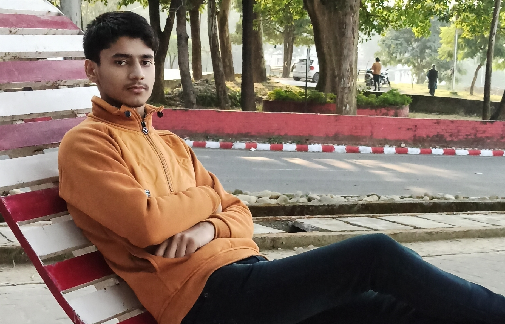

Sarthak Choudhary

I am
Sarthak Choudhary
.
I am a student pursuing
engineering
.
I am from
Roorkee, Uttarakhand
, a place well known for
IIT Roorkee
.
I love to spend my time on laptop
programming or designing 3D stuff
.
Education
Year of Graduation
Degree
Institution
2025
B. Tech
Indian Institute of Technology Goa
2020
12th standard
Shemford School Roorkee
2018
10th standard
Shemford School Roorkee
1st-year Courses @ IIT Goa
Autumn 2021-2022
CS101
: Introduction to Computing by
Dr. Clint P. George
CH101
: Physical Chemistry
CH102
: Inorganic and Organic Chemistry by
Rishikesh Narayan
CH104
: Chemistry Lab II
CS100
: Introdution to Profession
HS101
: Foundation Programme in Humanities and Social Sciences by
Sabiha Hashami
MTH101
: Calculus by
Sandipan De
NO101
: National Sports Organisation
PH101
: Quantum Phyics and applications by
Sudipta Kanungo
ELPP
: English Language Proficiency Program by
Neeraja Raghavan
Spring 2021-2022
BIO101
: Introductory Biology by
Sreenath Balakrishnan
CS102
: Software Tools by
Dr. Clint P. George
EE101
: Introduction to Electrical and Electronics Engineering
ME102
: Engineering Graphics and Introduction to Computer Aided-Drawing by
Anirudha Ambekar
MTH1021
: Basic Linear Algebra by
Kalpesh Harera
MTH1022
: Ordinary Differential Equations
NO102
: National Sports Organisation
PH102
: Electricity and Magnetism by
Vaibhav Wasnik
PH104
: Physics Lab II by
Sudipta Kanungo